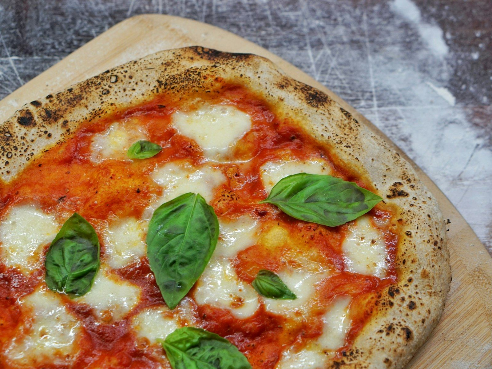
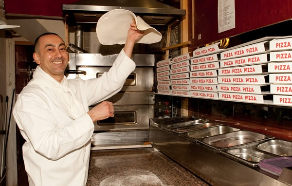
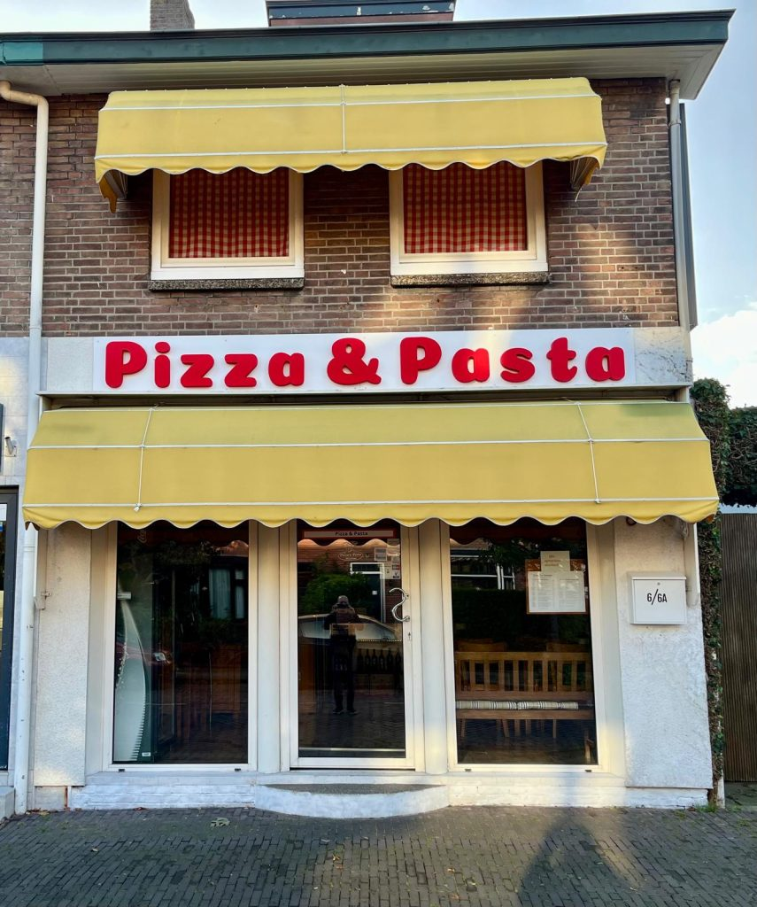

Oostdorperweg 6, Wassenaar
Pizza & Pasta Wassenaar
Al 20 jaar een begrip in Wassenaar. Iedere pizza met de hand gemaakt en gebakken in de steenoven: een dunne, zeer knapperige korst.
Dinsdag t/m zondag 17:00–22:00, maandag gesloten

€ 10per pizza of pastabij afhalen vanaf € 40
Menukaart
Bestellen gaat het snelst met het nummer erbij. Bel 070 514 6772
Extra toppings op alle pizza's: vanaf € 1. English menu
Budget Menu
Bestel voor minimaal € 40 en betaal slechts € 10 per pizza of pasta.
Alleen afhalen. Je kunt kiezen uit onderstaande gerechten.

Bij ons proeft u Italië
Iedere pizza wordt met de hand gemaakt. Het begint met het deeg van de pizzabodem: dat wordt op de traditionele manier gevormd door het deeg in de lucht te laten draaien.
Daarna beleggen we de pizza met zorg met dagverse producten, en dan gaat hij de steenoven in. Het resultaat: een overheerlijke pizza met een dunne en zeer knapperige korst.
- Deeg draaienmet de hand, in de lucht
- Beleggenmet dagverse producten
- Steenovendun en zeer knapperig

Afhalen of langskomen
Oostdorperweg 62242 NK Wassenaar
| Maandag | gesloten |
|---|---|
| Dinsdag t/m zondag | 17:00–22:00 |